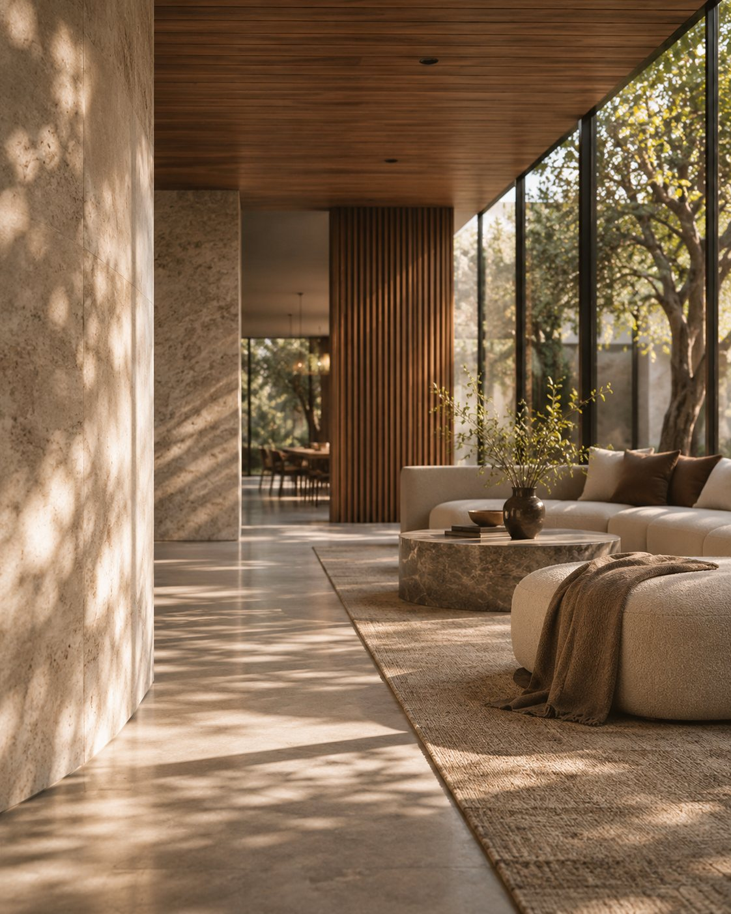

Your customers see a different side of your business.
Every business has an experience it intends to deliver.
What customers actually encounter can tell a different story.
Apertura CX brings that perspective into focus.
Built on commercial understanding.
Customer experience is not separate from the business.
It shapes how people perceive a brand, whether they choose it and the relationships that follow.
Independent perspective. Practical judgement.
We bring an outside view to the experiences businesses create, identifying what deserves attention and why.

The name
Apertura takes its name from the Italian word for an opening and the Latin aperire, to open or reveal. In photography, an aperture controls how much light enters the lens.
For Apertura CX, the idea is one of perspective, bringing the customer experience into focus.
The full definition
- Italian · apertura /aperˈtuːra/
- An opening. A space through which light passes, or something beyond becomes visible.
- Latin · aperire
- To open, uncover or reveal. To make accessible what was previously closed.
- In photography · aperture
- The opening in a lens that controls how much light enters.
Experience informs the thinking.
Founded by Carl Navè
Carl's experience spans building and operating customer-facing businesses, leading client relationships and shaping brand, retail and digital experiences.
That commercial perspective informs Apertura's work, balancing customer expectations with the realities of running a business.
The right expertise, where it matters.
Apertura works with independent specialists according to the needs of each engagement.
- Carl NavèCustomer experience and commercial strategy.
- Angelo PantaloneTeam experience, training and service development.
- Melanie TheisPhysical environments and service standards.
A consistent approach, shaped around each business.
Good decisions begin with understanding.
An independent perspective can reveal what is working, what deserves attention and where improvement may create greater value.
Start a conversation